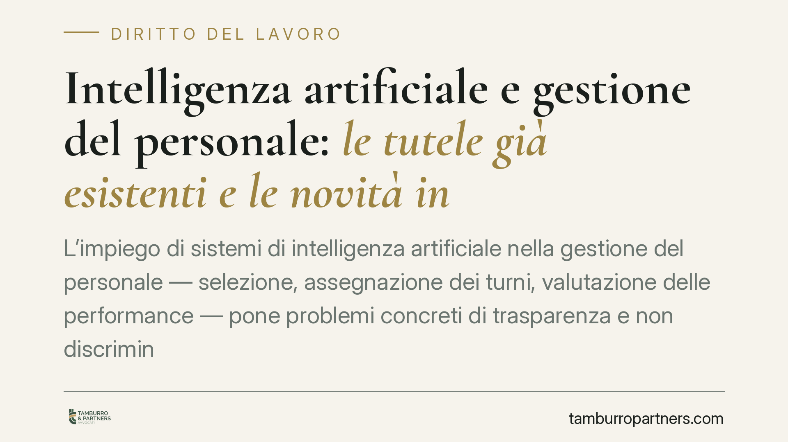

Intelligenza artificiale e gestione del personale: le tutele già esistenti e le novità in arrivo
L'impiego di sistemi di intelligenza artificiale nella gestione del personale — selezione, assegnazione dei turni, valutazione delle performance — pone problemi concreti di trasparenza e non discriminazione. Il quadro normativo è in evoluzione, ma diverse tutele sono già operative oggi. Facciamo ordine su cosa prevede il diritto vigente e su cosa i datori di lavoro devono verificare.

Il contesto
Sempre più organizzazioni utilizzano software basati su algoritmi per supportare decisioni sul personale: screening dei curricula, pianificazione dei turni, assegnazione dei carichi, valutazione dei rendimenti. L'automazione promette efficienza, ma solleva una questione precisa: chi risponde quando l'algoritmo sbaglia o produce effetti discriminatori?
Sul piano regolatorio, è in corso un'evoluzione importante. A livello europeo, il Regolamento (UE) 2024/1689 — noto come AI Act — classifica come "ad alto rischio" numerosi sistemi di IA impiegati nei rapporti di lavoro, imponendo obblighi crescenti di controllo e supervisione umana con un calendario di applicazione graduale. A livello nazionale sono in discussione interventi di adeguamento. Su questo fronte invitiamo alla prudenza: finché un decreto non è pubblicato in Gazzetta Ufficiale con numero e data certi, non va trattato come diritto vigente.
Inquadramento normativo
Indipendentemente dalle novità in arrivo, esistono già strumenti di tutela applicabili.
Il primo è l'art. 22 del Regolamento (UE) 2016/679 (GDPR). La norma riconosce all'interessato il diritto a non essere sottoposto a una decisione basata unicamente su un trattamento automatizzato che produca effetti giuridici o incida in modo analogamente significativo sulla sua persona. Non si tratta di un divieto assoluto: sono previste eccezioni (decisione necessaria per concludere o eseguire un contratto, consenso esplicito dell'interessato, autorizzazione prevista dal diritto dell'Unione o dello Stato membro). Anche nelle ipotesi ammesse, però, restano fermi l'obbligo di garantire l'intervento umano, il diritto a esprimere la propria posizione e quello di contestare la decisione.
Il secondo strumento è il cosiddetto Decreto Trasparenza (D.lgs. 104/2022), che ha introdotto l'art. 1-bis nel D.lgs. 152/1997. Questa disposizione impone al datore di lavoro obblighi informativi specifici quando utilizza sistemi decisionali o di monitoraggio automatizzati per decisioni rilevanti sul rapporto (assunzione, gestione, assegnazione di compiti, valutazione, disciplina, cessazione). È un punto spesso frainteso: tali obblighi valgono per la generalità dei rapporti di lavoro, non soltanto per il lavoro su piattaforma. Il lavoratore ha diritto di sapere che un algoritmo interviene, con quali logiche e su quali dati.
Resta inoltre pienamente operativo il divieto di discriminazione, diretta e indiretta, previsto dalla normativa antidiscriminatoria. Un algoritmo che penalizzi sistematicamente una categoria protetta produce una discriminazione vietata, anche in assenza di intento.
Implicazioni pratiche
Per i datori di lavoro il punto centrale è la responsabilità. La scelta di affidarsi a un software fornito da terzi non trasferisce al fornitore le conseguenze giuridiche delle decisioni adottate. La delega tecnologica non è una delega di responsabilità: chi adotta la decisione finale ne risponde.
Sul versante probatorio, la questione è delicata. Nelle controversie antidiscriminatorie l'ordinamento prevede meccanismi di alleggerimento dell'onere della prova a favore del lavoratore: se emergono elementi che fanno presumere una discriminazione, spetta al datore dimostrare che il criterio algoritmico era legittimo e proporzionato. Un sistema opaco, di cui non si conoscono le logiche di funzionamento, diventa in giudizio una debolezza difficile da colmare.
Per i lavoratori, significa poter chiedere spiegazioni e contestare esiti percepiti come ingiusti, attivando i diritti informativi e di intervento sopra richiamati.
Cosa fare in concreto
Per i datori di lavoro:
- Mappate i sistemi automatizzati già in uso nei processi HR e verificate per ciascuno se ricade negli obblighi informativi dell'art. 1-bis D.lgs. 152/1997.
- Predisponete e consegnate ai lavoratori e alle rappresentanze sindacali l'informativa sulle logiche e sui dati trattati dai sistemi decisionali o di monitoraggio.
- Pretendete dal fornitore documentazione tecnica sul funzionamento dell'algoritmo e verificate i dati di addestramento per prevenire effetti discriminatori.
- Garantite un intervento umano effettivo sulle decisioni rilevanti, non una ratifica formale dell'output automatico.
Per i lavoratori:
- Richiedete per iscritto l'informativa sui sistemi automatizzati che vi riguardano e conservatela.
Consigliamo a entrambe le parti di non attendere l'entrata in vigore di nuove norme: le tutele descritte sono già applicabili e le controversie si fondano sul quadro vigente.
---
Contributo informativo a cura di Tamburro & Partners - Avv. Giuseppe Tamburro. Non costituisce parere legale.
Ogni storia di lavoro ha i suoi tempi.
Se gestisci HR e vuoi un confronto su contenzioso, ispezioni o licenziamenti, scrivi allo studio. Ti rispondiamo entro un giorno lavorativo.